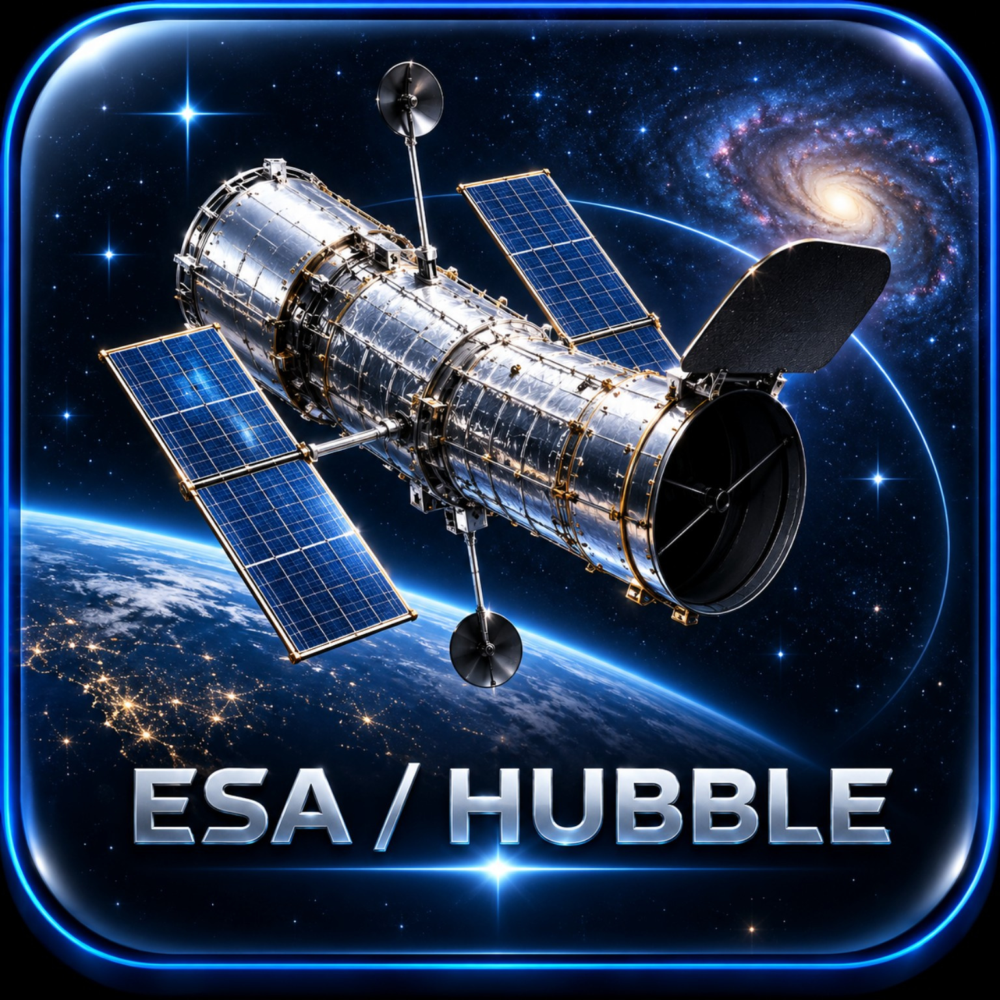
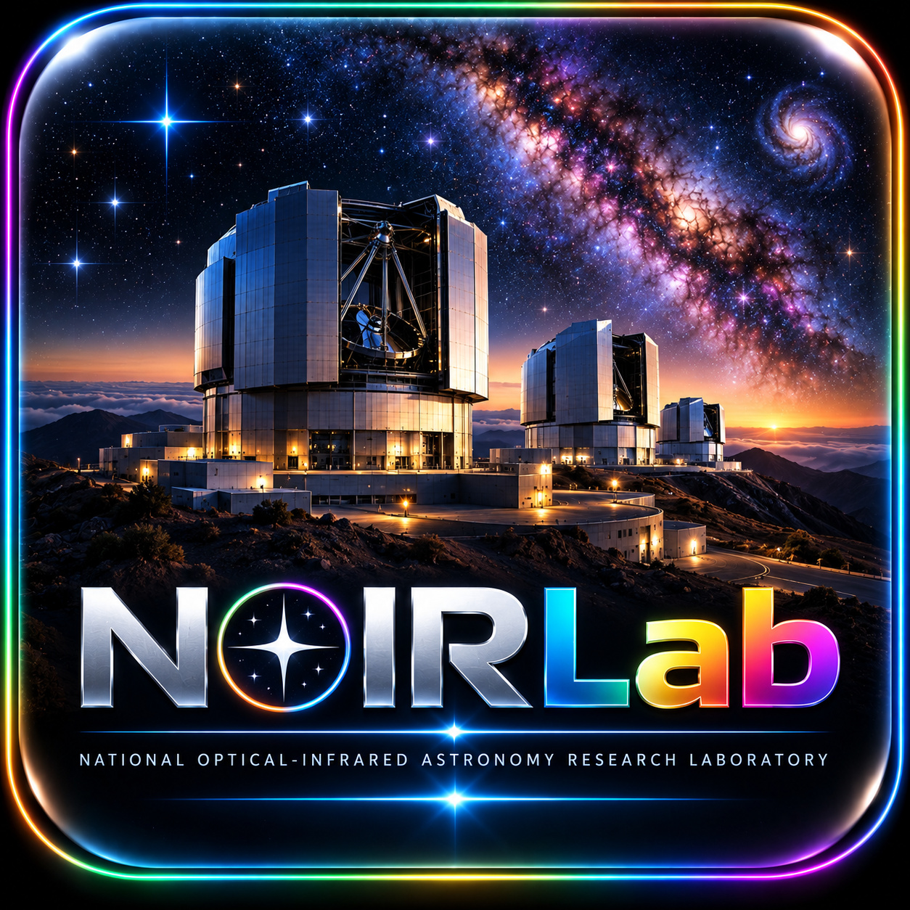
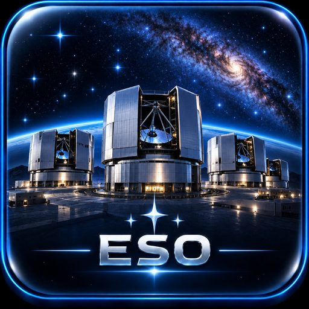
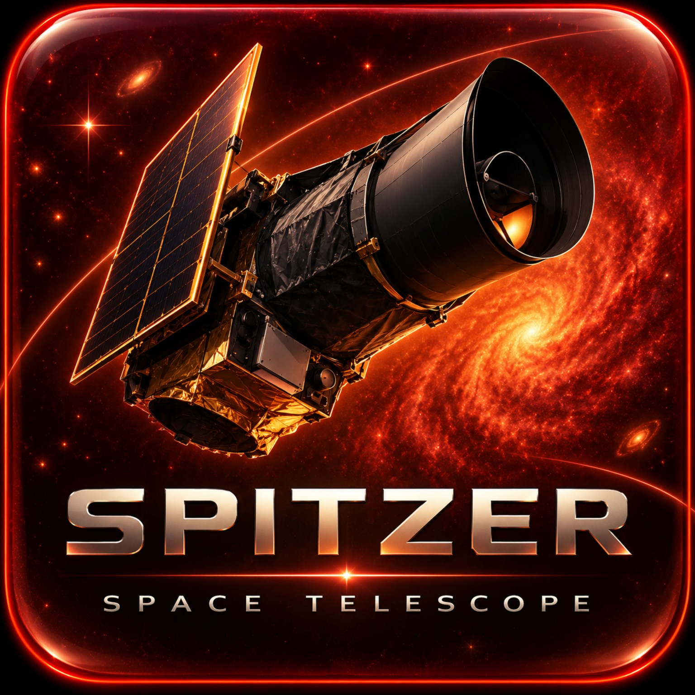
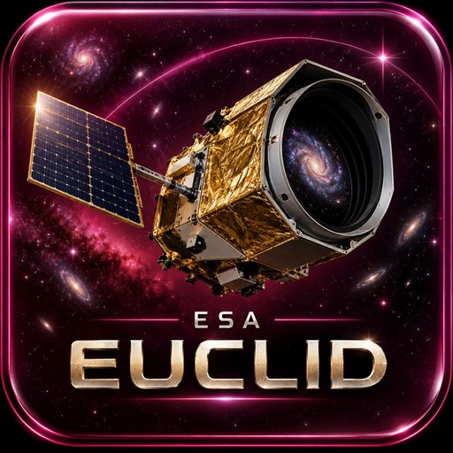
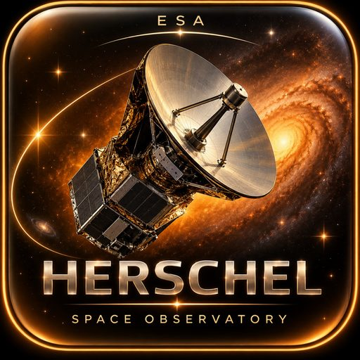
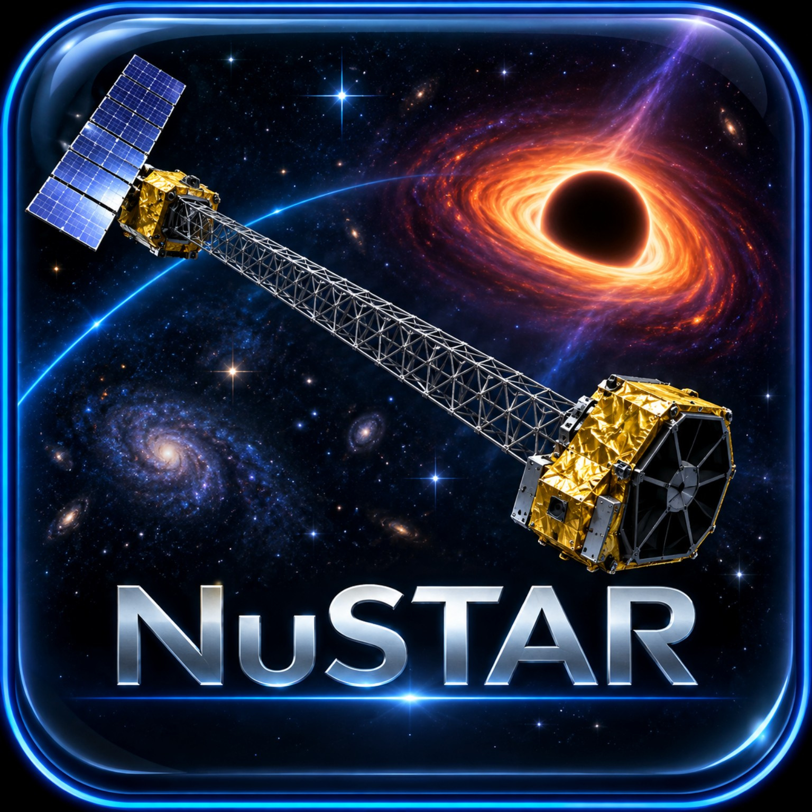
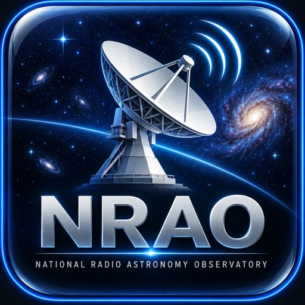

◎
TRAVEL THE SKY
Move between galaxies and deep-sky destinations in an interactive astronomical view rather than jumping between disconnected image pages.
Travel across the real sky and connect astronomical coordinates, scientific context, and extraordinary high-resolution imagery from some of the world's great observatories and missions.
Galaxy Viewer turns astronomical archives into a navigable experience: choose a survey, travel to a destination, see where it lives on the sky, then open the observatory source behind the image.
Galaxy Viewer was designed to make astronomical imagery feel connected to the universe around it. Images are not simply displayed; they are placed into an interactive sky so you can understand where a destination actually is.
Move between galaxies and deep-sky destinations in an interactive astronomical view rather than jumping between disconnected image pages.
Explore curated imagery from Hubble, JWST, NOIRLab, ESO, Chandra, Spitzer and other major scientific archives.
See coordinates, constellation, distance, scale, image span and other context that helps turn a beautiful image into a place in the universe.
I have always been fascinated by the universe. Long before Galaxy Viewer existed, that fascination began in the simplest possible way: looking up and wondering what was out there.
As a retired scientist, medical-device engineer and inventor, I spent much of my professional life thinking about how complex systems can be measured, understood and made useful. Galaxy Viewer grew from applying that same instinct to something I had loved since childhood: astronomy.
“I wanted a way to travel through the sky and connect some of its most beautiful places with the extraordinary imagery produced by the world's great observatories.”
The project is also deeply personal. When I was a child, my friend Carlos Eduardo Ramirez showed me the night sky through his telescope. Looking at the stars became a ritual for us. Decades later, that sense of wonder never really left. Galaxy Viewer is dedicated to him — the friend who literally showed me the stars.
At the heart of Galaxy Viewer's interactive sky is Aladin Lite, developed at the Centre de Données astronomiques de Strasbourg (CDS). Galaxy Viewer also draws on astronomical catalogs, metadata and imagery made accessible by observatories, missions and scientific institutions around the world.
Galaxy Viewer brings together imagery and scientific context from major observatories, missions, and astronomy archives.

HUBBLE
NOIRLAB
ESO CHANDRA
CHANDRA
SPITZER
EUCLID
HERSCHEL
NUSTAR
NRAOAladin Lite provides the interactive astronomical sky foundation that makes professional sky surveys accessible in a modern browser. Galaxy Viewer gratefully acknowledges Thomas Boch, Matthieu Baumann, Manon Marchand, CDS and the broader Aladin community.
Where metadata permits, Galaxy Viewer uses astronomical image information to align high-definition imagery with the sky: position, field of view, orientation and scale are treated as part of the experience rather than decoration.
The catalog is deliberately curated rather than indiscriminately scraped. Duplicates, banners, charts and unsuitable images are filtered out so the experience stays focused on compelling astronomical destinations.
Astronomy changes. Measurements improve, catalogs evolve and new observations replace old assumptions. Galaxy Viewer is built with that reality in mind and continues to evolve alongside the science.
Galaxy Viewer is an independent project. Observatory, mission, archive and institution names identify sources of astronomical content and do not imply sponsorship, affiliation, certification or endorsement. Third-party imagery, data, names, trademarks and logos remain the property of their respective owners and are subject to applicable licenses and usage policies.
Galaxy Viewer is currently moving through Google Play closed testing. If you enjoy astronomy, astrophotography, telescopes, sky surveys or simply exploring the universe, your feedback is genuinely useful.
Closed testers can install the Android release through Google Play, explore the viewer, and report anything that feels confusing, slow, inaccurate or simply worth improving.